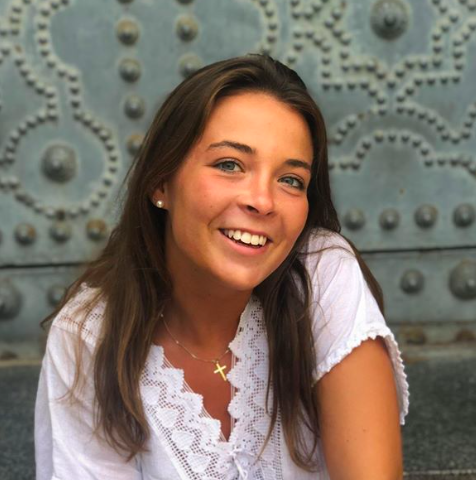
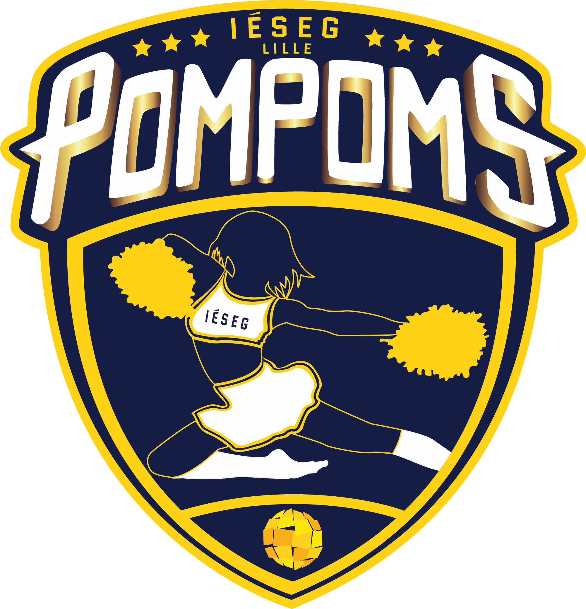
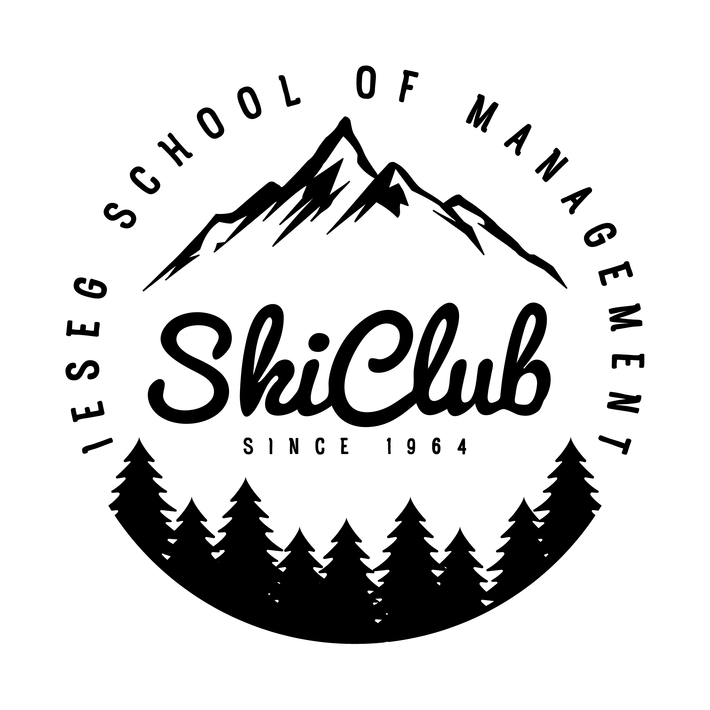

Bonjour, je suis Constance !
Passionnée de sport et du monde du spectacle, spécilisée en Marketing, je recherche actuellement un stage dans le secteur du marketing musical ou sportif !
Découvrez mon profil LinkedinDanse & Cheerleading
Capitaine de l'équipe de Cheerleading dans mon école, j'ai voulu continuer ma passion pour la danse lorsque je suis arrivée à l'IESEG School of Management. Grâce à ce sport, j'ai découvert les compétitions, le management et surtout le dépassement de soi. Ce sport à rythmé mes quatre années à l'IESEG et je suis fière de nos résultats obtenus en 2019 (4ème place à l'EuroPula, compétiton interuniversitaire internationale)
Formation

- IESEG School of Management, Lille
- Accréditée AACSB, AMBA ET EQUIS
- 1ère école de commerce Post-Bac française
- 8ème école de commerce française
- Master Spécialité Marketing
Expériences professionnelles
Community Manager
Lille, Septembre 2019 - Juin 2020
- Participation au développement de la communication générale de l'école
- Référente auprès des futurs candidats en tant qu'ambassadrice
- Gestion des réseaux sociaux de l'école
- Compétences : web marketing, esprit d'analyse
Conseillère de vente
Paris, Juin - Août 2018
- Stage commercial dans une start-up de location de bateaux électriques
- Vérification des bateaux, ouverture et fermeture de la base de Paris La Villette
Conseillère de vente
Paris, Mai - Juin 2018
- Conseillère dans une des plus grandes boutiques du tournoi sportif
- Vente, encaissement, gestion des stocks, merchandising
- Compétences : sens commercial, excellence du service
Character Attendant
Orlando, Juin - Août 2017
- Responsable de la sécurité des personnages du parc : respect des règles, vérification des conditions météorologiques
- Organisation de mon espace de travail, veiller à la sécurité des clients
- Leur offrir un service d'excellence et rester dans l'univers de Disney en toutes situations
- Compétences : sens de l'écoute, gestion des conflits, adaptabilité
Expériences associatives
Responsable Communication
Lille, Février - Décembre 2019
- Organisation de la semaine de ski
- Stratégie digitale : publications régulières afin d'atteindre notre objectif de 550 participants
- Création d'un thème autour de la semaine et communication autour de cet univers
BDE Tontons Dockers, Pôle évènements
Lille, Juin - Décembre 2018
- Organisation d'évènements pour les étudiants
- Gestion du Week-end d'intégration (1000 étudiants) pendant 3 jours
BDS Sportoutatis, Responsable Partenariats & Compétitions
Lille, Septembre - Décembre 2017
- Gestion des sports à l'IESEG, supervision des entraînements
- Démarchage de partenaires
- Compétition EuroBarcelona : organisation du séjour avec les 140 sportifs de l'IESEG
- Compétences : plannification, prise d'initiatives, organisation
Responsable Communication
Lille, Septembre 2017 - Mars 2018
- Association visant à accompagner pendant 1 an 10 femmes en rémission du cancer du sein autour d'activités et qui se conclut par l'organisation d'un défilé au Musée des Beaux Arts de Lille
- Gestion des réseaux sociaux de l'association : création du compte Instagram, page Facebook
- Communication autour du défilé